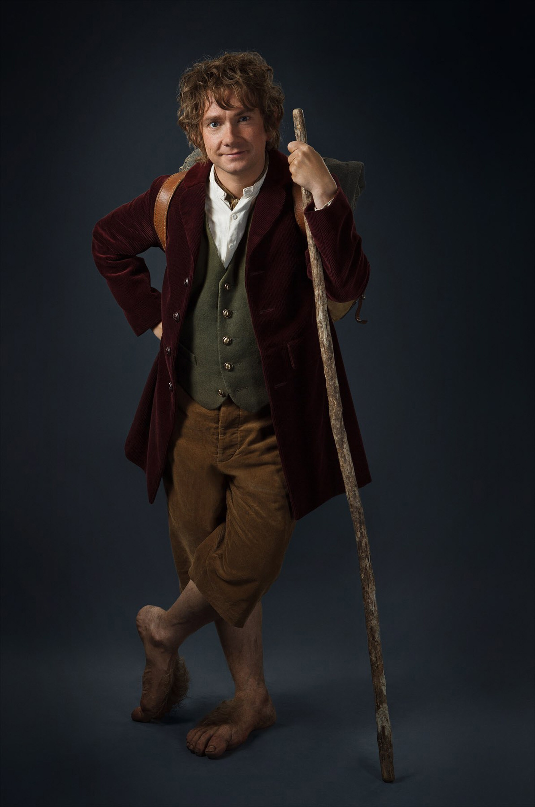

Bilbo Baggins was born on September 22 by Shire Reckoning, in the year 2890 of the Third Age, the son of Bungo Baggins and Belladonna Took. He was a grandson of the Old Took. Gandalf suggested Bilbo Baggins to be hired by Thorin and Company to be their burglar in the Quest of Erebor, and later fought in the Battle of the Five Armies. Bilbo was also one of the bearers of the One Ring, and the first to voluntarily give it up, although with some difficulty. He wrote many of his adventures in a book he called There and Back Again. Bilbo adopted Frodo Baggins as his nephew after his parents, Drogo Baggins and Primula Brandybuck, drowned in the Brandywine River.
Hobbits travelling to Rivendell
| Place | Events | Date |
|---|---|---|
| Bag End | Four Ringwraiths enter the Shire before dawn. Frodo, Sam, and Pippin leave Bag End. | September 23, 3018 |
| The Old Forest | Frodo, Sam, Pippin, and Merry enter the Old Forest and find Tom Bombadil. | September 26, 3018 |
| Bree | The hobbits arrive at Bree at nightfall. Gandalf visits The Gaffer. Aragorn meets Frodo in the Inn of the Prancing Pony. | September 29, 3018 |
| Weathertop | The night at Weathertop. The Nazgul locate Aragorn and the four hobbits. Frodo Baggins is hurt by a Morgul blade. | October 6, 3018 |
| Last Bridge | Aragorn and the hobbits cross the bridge. | October 13, 3018 |
| Bruinen | Escape beyond Bruinen. | October 20, 3018 |
| Rivendell | Frodo awakes in the House of Elrond at Rivendell with Gandalf at his side. Boromir arrives at Rivendell by nightfall. | October 24, 3018 |
| Rivendell | Council of Elrond. | October 25, 3018 |